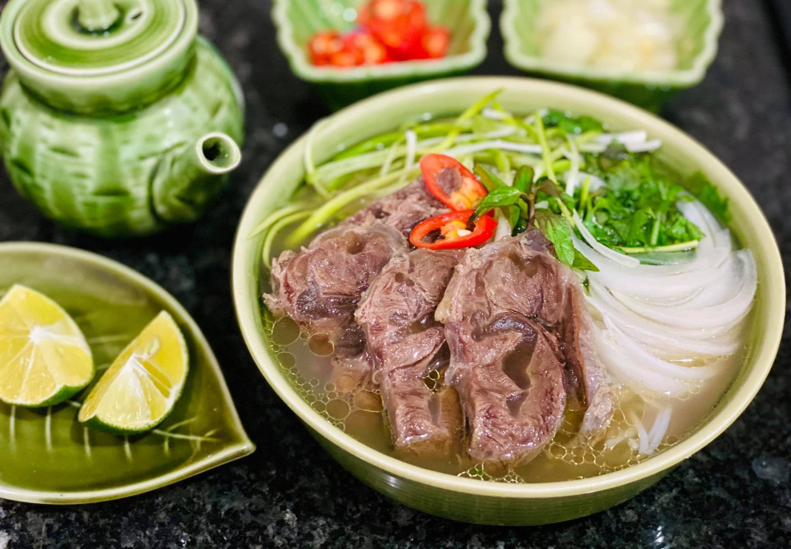
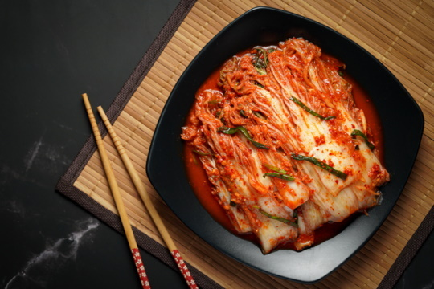

Популярные блюда Азии
Нажмите на любое блюдо, чтобы увидеть подробный рецепт

Суши и роллы (Япония)
Рис с рыбой и овощами. Главное блюдо японской кухни, покорившее мир.

Фо Бо (Вьетнам)
Сытный суп с говядиной и рисовой лапшой. Блюдо номер один во Вьетнаме.

Пад Тай (Таиланд)
Жареная рисовая лапша с креветками, яйцом и арахисом.

Кимчи (Корея)
Острая квашеная пекинская капуста — символ корейской кухни.